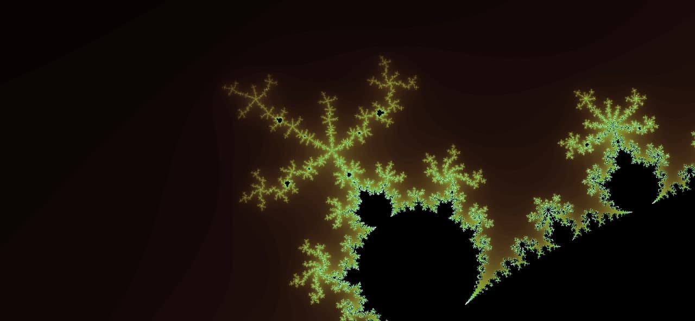

Фрактали
Фрактал ( лат. fractus - Подрібнений, зламаний, розбитий) - складна геометрична фігура, що
володіє властивістю самоподібності, тобто складена з декількох частин, кожна з яких подібна
всьому тілі цілком. У більш широкому сенсі під фракталами розуміють безлічі точок у евклідовому
просторі, мають дробову метричну розмірність (в сенсі Минковского або Хаусдорфа), або метричну
розмірність, відмінну від топологічної.

Використання
Рухайте картинку мишкою, зум - кнопками, або колесиком. Зміна кольору здійснюється кнопкою теми. Вибір фракталу доступний з випадаючого меню.